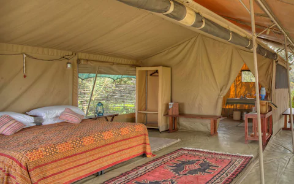

Angama Mara
Expert Rating:9/10
Angama Mara, balancing high on the Great Rift Valley overlooking the Maasai Mara plains, is all about the utterly mesmerising view. The lodge brings next-level luxury to the usual safari experience, offering swanky glass-fronted tents, excellent cuisine and warm hospitality
Location: Meru, KenyaPrice:FROM-£667
Elsa Kopje's Lodge
Expert Rating:9/10
This eco-friendly boutique lodge sits on Mughwango Hill overlooking the Meru plains. The elegant rustic cottages offer spectacular views over Meru National Park, and the restaurant serves excellent international dishes with an Italian influence. Activities include river fishing and visits to the park’s rhino sanctuary
Location: Maasai Mara National Reserve, KenyaPrice:FROM-£669
Tribe
Expert Rating:9/10

Tribe is possibly Nairobi’s coolest hotel. Blending contemporary design with tribal art and artefacts handpicked from across the continent, this luxury boutique accommodation offers a taste of Africa old and new. Expect understated glamour, exceptional service and an eclectic crowd.
Location: Nairobi, KenyaPrice:£243 pn
Mara Bushtops
Expert Rating:9/10
This spectacular tented camp, set in its own 15,000 acre conservancy, has as many creature comforts as there are actual creatures, with vast wooden decked tents, 24-hour butler service, a Maasai village-inspired spa and swimming pool. Incredible views and abundant wildlife make for a remote Eden-like experience
Location: Isaaten Conservancy, KenyaPrice:TENTS FROM £633 per person per night
Giraffe Manor
Expert Rating:9/10
Giraffe Manor is famous for its friendly neighbours – a herd of Rothschild giraffes that delight in sticking their long necks through the windows to be fed treats. Revel in getting up close to these magnificent animals while basking in the comforts of a gorgeous 1930s manor house
Location: Meru, KenyaPrice:FROM £412 pn
Enaidura Camp
Expert Rating:9/10
Set in the heart of the Maasai Mara, Enaidura is a luxury six-tent camp positioned close to several river crossing points used by the Great Migration wildebeest herds. Enaidura is co-owned by two of Kenya’s top guides, both highly skilled at finding their own wildlife sightings and avoiding the crowds
Location: Maasai Mara National Reserve, KenyaPrice:FROM £505 pn
Mahali Mzuri
Expert Rating:9/10
Richard Branson’s safari camp breaks away from traditional tents and brings modern comforts to the Maasai Mara. Every aspect has been considered, from endless nibbles and drinks to binoculars thoughtfully placed for guests to take in the incredible views and the wildlife living within it
Location: Meru, KenyaPrice:FROM £ 1,402pn
Ol Pejeta Bush CamphExpert Rating:8/10

Ol Pejeta Bush Camp embodies low-key luxury with six large canvas tents on the tranquil banks of Ewaso Nyiro River in Ol Pejeta Conservancy. Warm hospitality and great guides make this a perfect base from which to explore Ol Pejeta, be it by horse riding with rhinos or playing hide-and-seek with the anti-poaching dogs.
Location: Ol Pejeta Conservancy, KenyaPrice:FROM £348 pn
HemingWays Nairobi
Expert Rating:8/10
Hemingways is a colonial-style boutique hotel harking back to the days when its namesake writer explored east Africa. It's set in the leafy and secluded suburbs of Karen looking out over the Ngong Hills, with elegant grounds making for a luxurious stopover between dusty safaris
Location: Nairobi, KenyaPrice:FROM £313 pn
Serian 'The Original'
Expert Rating:8/10
Meaning 'serene' in the Maasai language, Serian effortlessly lives up to its name. In the private Mara North Conservancy on the fringes of the Maasai Mara, this tented camp offers exceptional wildlife viewing with award-winning guides, elegant accommodation and tantalising dining
Mara North Conservancy, KenyaFROM £ 910 pn
Saruni Samburu Lodge
Expert Rating:8/10
Offering stunning views over the plains, the lodge is located on the top of a rocky outcrop in the Kalama Conservancy bordering Samburu National Reserve. The spacious open-fronted villas feature open-air showers. There are two infinity pools and a massage hut. The cuisine has an Italian influence
Locaton: KenyaPrice:FROM-£ 619 pn
Fairmont Mount Kenya Safari Club
Expert Rating:8/10
Located on the beautiful foothills of Mount Kenya, the elegant Fairmont Mount Kenya Safari Club is set in 100 acres of landscaped gardens, with fantastic mountain views. There’s also an excellent golf course, an on-site animal orphanage and plenty to do, from horse riding to game viewing on bicycles
Locaton: Nairobi, KenyaCheck availability for dates and prices